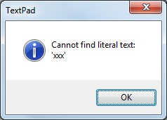
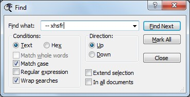

[BACK] (XBN-PhraseExpress is released under the LPGL 2.1)
This document lists all available phrases related to search and replacement, in syntax-summary form. Each category also has a variety of example code.
Contents:
[go] The XBNPE projects in which particular phrases are actually available[go] Potential issues to keep in mind when using search-and-replace functionality[go] Mid-replacements| Complete
Syntax summary |
Examples | Location in
the xh ddmenu |
|
| Find | [go] |
[go] |
xhsf |
| Replace | [go] |
[go] |
xhsr |
| Find-in-files | [go] |
[go] |
xhsfi |
| Bookmarks | [go] |
[go] |
xhsm |
| Go-to dialog | [go] |
[go] |
xhsg |
| Brackets | [go] |
[go] |
xhse |
The examples in this document are intended to be called from within a text document. Also note that they are displayed in uncompressed form, with extra line-breaks and indentation for clarity. Here is the ...phrase-file... containing the examples.
[top] Search and replace: Mid-replacementsMid-replacements are phrases holding commonly used replacements that may be used in any scope. Specifically, a "mid-replacement" is the portion of a replacement that goes
{#insert zFcsTPRplcDlgOpen} here
{#insert zRplcBtnAllTD}
{#insert zRplcDlgClose}
When called, the find-what field is guaranteed to be focused on. A mid-replacement
Eliminate everything in a line, except its first word (Note that this particular mid-replacement requires the regex flag to be turned on, hence "zzMidRplcRE"):
zzMidRplcREKeepWrd1Only
{#SETPHRASE -description zvFIND_WHAT -content
^([A-Za-z0-9_]+)\>.*$
-autotext zvFIND_WHAT -folder ctvv_folder}
{#insert zvFIND_WHAT}
{#insert zRplcFieldWith}
{#SETPHRASE -description zvRPLC_WITH -content
$1
-autotext zvRPLC_WITH -folder ctvv_folder}
{#insert zvRPLC_WITH}
A mid-replacement may be used in any scope, simply be executing the appropriate replacement button. For example, to execute this only against selected lines:
snr01klw1sel
{#insert zRplcDlgOpenRE}
{#insert zzMidRplcREKeepWrd1Only}
{#insert zRplcBtnAllSel}
{#insert zRplcDlgCloseRE}
A mid-replace-go is a mid-replacement that does execute the search (they are the same as mid-replacements, with a replace-button-press at the end). Mid-replace-go-s are for reusable replacements that are logically only for a particular scope.
Both mid-replacements and mid-replace-go-s are useful when doing a series of replacements. Both allow you to not have to re-open the replacement dialog, nor re-set the flags between each individual replacement.
[top] Search and replace: Potential IssuesSignificant issues to keep in mind when working with search-and-replace:
[go] Specific flag-control[go] The Whole-words ('WW') flag must sometimes be "forced" on[go] Handling the potential for no matches found[go] Typing directly into a dialog's textbox is unreliableSome other issues:
{#insert zTPGTDocTop}{#insert zTPBookmarkClearAll}
{#insert zTPGTDocTop}{#insert zTPBookmarkGTNext}
{#insert zTPGTDocBottom}{#insert zTPBookmarkGTNext}
[BACK] SNR: Potential issue: Handling the potential for no matches foundProbably the biggest issue in relation to search-and-replace, is handling the potential for no matches being found. When the search-term is not found, this modal dialog pops up over the find (or replace or find-in-files) dialog:

Handling this is simply not possible when finding specific instances of text. There are specific ways of handling this, however, when marking lines in the find-dialog, and two ways of doing it in the replace-dialog: definitely and optionally.
[BACK] SNR: Potential issue: Handling not-found when marking linesWhen in the find-dialog, lines are marked by pressing the "Mark All" button:
{#insert zFindBtnMarkAll}
When not found, a modal no-matches-found dialog is displayed. Unless and until this dialog is dismissed, all subsequent phrase-calls will fail--until, at least, one of them does something that happens to, coincidentally, press on the [OK] button.
Using the alternative mark-button
{#insert zFindBtnMarkAllThnEtr}
dismisses the potential no-matches-found dialog, without disturbing processes when the search term is indeed found. The consequence of using this, is that, when a match is found, the first one is selected. This may be acceptable behavior when marking all lines, but clearly unacceptable when searching for a specific instance of text.
If the start-token does not exist in the document (or more generally, the find-what text is not in the current search scope), a cannot-find-match dialog is displayed. This is a modal dialog, meaning TextPad cannot be used further until this dialog is dismissed.
Unfortunately, there is no safe way of dismissing this dialog, without the consequence of messing up situations where matches are found. Specifically:
[Enter] dismisses the dialog. This is good.[Enter] finds the next instance. But, if WrapSearch is off and there is no next-instance, this causes the no-matches-found dialog to appear! Alternatively, if the WrapSearch flag is set and there's only one instance, the same instance is found again, after cycling through the entire document, resulting in an audible "ding".Therefore, care must be taken to ensure that input text is as expected. The requirements for input text provided by users must be well documented.
[BACK] SNR: Potential issue: Specific flag-controlOpening a dialog blindly, such as with
{#insert zFcsTPFindDlgOpen}
adopts the currently-set flags. The only flags that can be directly controlled are
'MC'),'RE'),'WW'),'WW' and 'RE' are mutually-exclusive. They may never be on at the same time.'WrapSearch') flag is disabled (unselected, unchecked) by TextPad, when extend-search ('XS') is turned on. However, there is a way to turn both on (although I'm not sure the purpose of doing so): Turn the 'XS' flag on, then close-and-reopen the find dialog. The WrapSearch flag is now clickable.'AD' flag (for marking lines in all open documents) is turned off by TextPad whenever the find-dialog is closed.For all other flags, the user must be relied upon to confirm the current state. To instruct your user to set the find-flags to their defaults, use
{#insert zFindFlagsMConOnlyThenPreCheck}
Two variations (both useable in TPKC, before this SNR-project is installed):
{#insert zFindDialogFlagPreCheck}{#insert zFindDialogFlagPreCheckMCOnly}[BACK] SNR: Potential issue: Whole-words flag must sometimes be "forced" onWhen the search-term contains almost any symbol, the Whole-words checkbox is unclickable.

The only way to turn it on, is by first deleting the search term. This is the purpose of the "ForceWW" flag. Whereas the ('WW') flag is "settable", meaning changeable when the find (or replace or find-in-files) dialog is closed, the "ForceWW" flag is only usable when the dialog is open.
Note that
{#insert zTPFindFlagWWon}
does nothing when the search-term is not "whole-word-able", but
{#insert zTPFindFlagWWoff}
always works.
[top] SNR: The XBNPE projects in which phrases actually exist.All the phrases listed in this document exist are available in the XBNPE-SNR (Search and replace) project. However, some of these phrases actually exist in the TextPad built-in command (XBNPE-TPKC) project. This implies that the TPKC has a subset of these SNR phrases available to it. In other words, if the TPKC project is installed, but the SNR project has not yet been installed, then only those phrases listed under TPKC are available.
Specifically, each syntax-section in this document (for find, replace, go-to, bookmarks, and find-in-files) have their phrases listed under either
"XBNPE-Search and Replace (SNR) project"
or
"XBNPE-TextPad built-in commands (TPKC) project"
The name of some phrases under the TPKC project begin with "zTP", which are the built-in TextPad commands. and some of these followed by a single asterisk ('*'), while others are followed by two asterisks. Note that asterisks exist only under the TPKC project, and only for built-in TextPad commands (hence the 'zTP'). For example, the find dialog lists these two phrases (phrase syntaxes) under TPKC:
zTPFindNext**zTPFindPrevThe single asterisk indicates that zTPFindPrev is available only if you have assigned it a key-command in TextPad (and that key-command is properly assigned in your user-command-configuration). Two asterisks indicate that the phrase is a "TextPad bootstrap" (for either the XKP or TPKC projects), and are therefore always available.
Therefore, since the Tex
[top] SNR: Bookmarks: Complete Syntax summary[go to examples] -- How to interpret these syntax-summaries, and the projects in which these phrases exist.
(none)
zTPBookmarkGT[Prev,Next]zTPBookmarkToggle**zTPBookmark[Clear,Invert]AllzTPBookmark[Cut,Copy]All**zTPBookmark[InvertAll,Toggle]ViaAltSzFindBtnMarkAll[ThnEtr]zFindFlagADTgl[RAW][top] SNR: Bookmarks: Examples[go to syntax]
Contents:
[BACK] Bookmark example: Delete all unwanted lines, via invert-allThis example deletes all lines from the following document that start with something other than the word "good":
|
snr02bkmkdelbadlines
(*In case any lines are already marked:*)
{#insert zTPBookmarkClearAll}
(*Mark all good lines:*)
{#insert zFindDlgOpenRE}
{#SETPHRASE -description zvFIND_WHAT -content
^good
-autotext zvFIND_WHAT -folder ctvv_folder}{#insert zvFIND_WHAT}
{#insert zFindBtnMarkAllThnEtr}
{#insert zFindDlgCloseRE}
(*Invert then delete all bookmarks:*)
{#insert zTPBookmarkInvertAll}{#insert zTPBookmarkDeleteAll}
Resulting in
|
This concept is used by ............... TPKC-build-proc-15.
[BACK] Loop based on mark-countTake the following file and, using a loop, surround all lines containing the word "good" with '[[[' and ']]]'. The number of bookmarked lines is determined, and then each marked line is processed in a loop.
|
snr03bkmkloop
(*Init -- Will fail if bookmarks exist.*)
{#insert zTPBookmarkClearAll}
(*Mark all lines, prompt user for mark-count*)
{#insert zFcsTPFindDlgOpen}
{#SETPHRASE -description zvFIND_WHAT -content
good
-autotext zvFIND_WHAT -folder ctvv_folder}{#insert zvFIND_WHAT}
{#insert zFindBtnMarkAllThnEtr}
{#insert zFindDlgClose}
(*How many lines were just marked? -- DING alert!*)
{#insert zREoffCopyCountMarkedLines}(*<--Sets zvLINE_COUNT*)
(*Prepare for the loop:*)
{#insert zTPGTDocTop}{#insert zWordWrapOffFromTPDfltState}
(*For each marked line, surround it with 3 square brackets:*)
{#LOOP
{#insert zTPBookmarkGTNext}(*At HOME*)
[[[{#insert zEND}]]]
{#insert zTPBookmarkToggle}
-count {#insert zvLINE_COUNT}}
(*Clean up*)
{#insert zWordWrapOn}
Output:
|
Note that this processes the bookmark in the first line, last. See item three under "Some other issues". Also, an alternative to determining the number of bookmarked lines, is to prompt the user:
{#insert zFindBtnMarkAllThnEtr}
{#SETPHRASE -description
zvLINE_COUNT -content
{#INPUT -head How many lines marked? (see status bar) -single}
-autotext zvLINE_COUNT -folder ctvv_folder}
{#insert zFindDlgClose}
[top] SNR: Find: Complete syntax summary[go to examples] -- How to interpret these syntax-summaries, and the projects in which these phrases exist.
zFind[Next,Prev][2-5]zFindDlgClose[[Down,Up]][MC][[RE,WW]][XS]zFindDlgOpen[[Down,Up]]MCOnlyzFindDlgOpen[[Down,Up]][MC][[RE,[Force]WW]][XS]zFindFlag[MC,RE,WW]onOnlyzFindFlagsMC[RE,WW][on,off]zFindFlags[MC][RE,[Force]WW][XS]Tgl[RAW]zFindFlags[MC][[RE,WW]]XSTgl[RAW]fwhatp (Convenience utility to create the set-print zvFIND_WHAT variable)zFindFlagADBtnMarkAD[RAW]zFindFlagsMConOnlyThenPreCheckzFindGoXSOpenRplczFindNextPromptedStringzFindNonWSCharUpREoffzFindNonWS[Char,Word]UpREoffzFindPrevPromptedStringzzRegexNonWS[Char,Word]PressFindNextzFindFlag[Down,Up,Text,Hex][RAW]zFindFlag[MC,RE,[Force]WW,XS]Tgl[RAW]zFindFlag[AD,WrapSearch]Tgl[RAW] (see bookmarks)zTPFindFlag[MC,RE,WW][on,off]zFcsTPFindDlgOpenzFindBtnMarkAll[ThnEtr] (see bookmarks)zFindBtnNext[[2-5]]zFind[MC,RE,WW,XS]BtnNext[MC,RE,WW,XS] (Options must match. For example: 'zFindMCBtnNextMC')zFindDlgClosezFindFieldWhatzTPFindDlgOpen**zTPFindNext**zTPFindPrevzFindDialogFlagPreCheckzFindDialogFlagPreCheckMCOnlyzFindDlgOpenRETglClose[top] SNR: Find: Examples[go to syntax]
Contents:
[BACK] Example: Find next 'xxx'This only works when 'xxx' is found.
snr04findnextx
{#insert zFcsTPFindDlgOpen}
{#SETPHRASE -description zvFIND_WHAT -content
xxx
-autotext zvFIND_WHAT -folder ctvv_folder}{#insert zvFIND_WHAT}
{#insert zFindBtnNext}
{#insert zFindDlgClose}
[BACK] Example: Find the third 'xxx' upThis only works when 3 'xxx'-s exist above the cursor (or at least one is found, and WrapSearch is on).
snr05findnextx3up
{#insert zFindDlgOpenUp}
{#SETPHRASE -description zvFIND_WHAT -content
xxx
-autotext zvFIND_WHAT -folder ctvv_folder}{#insert zvFIND_WHAT}
{#insert zFindBtnNext3}
{#insert zFindDlgCloseDown}(*Clean up: Down is considered 'default'*)
As in all cases after a find or replacement is made, now that 'xxx' is the search term, and while the dialog is closed, the following can be used:
zTPFind[Next,Prev]
zFind[Next,Prev][2-5]
[BACK] Find start token, select through end tokenIn the following document, with the cursor at the top, find 'xxx', and then select through 'zzz'.
|
snr06findselxtozfinal
(*Pre-check, warning, and prep:*)
{#insert zFindDialogFlagPreCheckMCOnly}
{#BALLOON -title WARNING -text Warning: This example
code will FAIL unless 'xxx' exists in this document, and
'zzz' exists somewhere after it.}
{#insert zTPGTDocTop}
{#insert zFindDlgOpenDownMCOnly}
(*Find and select open token:*)
{#SETPHRASE -description zvFIND_WHAT -content
xxx
-autotext zvFIND_WHAT -folder ctvv_folder}{#insert zvFIND_WHAT}
{#insert zFindBtnNext}
(*Extend selection through close token:*)
{#SETPHRASE -description zvFIND_WHAT -content
zzz
-autotext zvFIND_WHAT -folder ctvv_folder}{#insert zvFIND_WHAT}
{#insert zFindXSBtnNextXS}
{#insert zFindDlgClose}
|
[top] SNR: Replace: Complete syntax summary[go to examples] -- How to interpret these syntax-summaries, and the projects in which these phrases exist.
zRplcBtnNext[[2-5,_M_rnxtc,Close]] (Needs zvRPLC_NXT_CNT)zRplcDlgClose[MC][[RE,WW]]zRplcDlgOpenMCOnlyzRplcDlgOpen[MC][[RE,[Force]WW]]fwhatp (Convenience utility to create the set-print zvFIND_WHAT variable)rwithp (Convenience utility to create the set-print zvRPLC_WITH variable)zzFWhatRWithSynzFcsTPRplcDlgOpenzRplcBtn[Find,Next,Rplc]zRplcDlgClosezRplcField[What,With]zRplcFlagSel[RAW]zRplcFlag[[AD,TD]][raw]zRplcWithNOTHINGzTPReplaceNextzTPRplcDlgOpen**zBalPostRplcHnrDingAlertzRplcBtnAllAD[NoConfirm][Hnr][RAW]zRplcBtnAllAD[NoConfirm]_hnr[RAW]If_M_hnry (Needs zvHNR_YES)zRplcBtnAllAD[raw]zRplcBtnAll[RAW]zRplcBtnAll[Sel,TD][Hnr[RAW]]zRplcBtnAll[Sel,TD]_hnr[RAW]If_M_hnryzRplcFlagADEntrForHNROnlyRAWz[Sel,TD,AD]HandleNoRplcs[RAW]zvHNR_YES_st[ES,Yes][top] SNR: Replace: Examples[go to syntax]
Contents:
[go] Replace next 'xxx' (basic)[go] Replace all 'xxx'-s in the document (basic)[go] Replace all 'xxx'-s, handling no matches[go] Replace all 'xxx'-s, optionally handling no matches[BACK] Example: Replace the next 'xxx' (basic implementation)This works if 'xxx' exists, and the cursor is before it:
snr07rplcnextx
{#insert zFcsTPRplcDlgOpen}
{#SETPHRASE -description zvFIND_WHAT -content
xxx
-autotext zvFIND_WHAT -folder ctvv_folder}{#insert zvFIND_WHAT}
{#insert zRplcFieldWith}
{#SETPHRASE -description zvRPLC_WITH -content
zzz
-autotext zvRPLC_WITH -folder ctvv_folder}
{#insert zvRPLC_WITH}
{#insert zRplcBtnFindThenRplc}
{#insert zRplcDlgClose}
[BACK] Example: Replace all 'xxx'-s in the document (basic implementation)This works if 'xxx' exists:
snr08rplcallxs
{#insert zFcsTPRplcDlgOpen}
{#SETPHRASE -description zvFIND_WHAT -content
xxx
-autotext zvFIND_WHAT -folder ctvv_folder}{#insert zvFIND_WHAT}
{#insert zRplcFieldWith}
{#SETPHRASE -description zvRPLC_WITH -content
zzz
-autotext zvRPLC_WITH -folder ctvv_folder}{#insert zvRPLC_WITH}
{#insert zRplcBtnAllTD}
{#insert zRplcDlgClose}
[BACK] Example: Replace all 'xxx'-s, handling no matchesThis works even if 'xxx' is not found (it handles the potential of no-matches):
snr09rplcallxshnr
{#insert zFcsTPRplcDlgOpen}
{#SETPHRASE -description zvFIND_WHAT -content
xxx
-autotext zvFIND_WHAT -folder ctvv_folder}{#insert zvFIND_WHAT}
{#insert zRplcFieldWith}
{#SETPHRASE -description zvRPLC_WITH -content
zzz
-autotext zvRPLC_WITH -folder ctvv_folder}{#insert zvRPLC_WITH}
{#insert zRplcBtnAllTDHnr}
{#insert zRplcDlgClose}
In addition to the time it takes to do this extra "handling" step, the consequence of using the 'Hnr'-version is an audible "ding" when the search-term is found, and two when not.
[BACK] Example: Replace all 'xxx'-s, optionally handling no matchesThis optionally handles the potential for no-matches, based on the value of zvHNR_YES. To
'' (nothing--the empty-string).'yes'. Use this when it is known that there is at least one match. Choosing this will cause the process (the below example) to fail when there are no matches.snr10rplcallxshnr
{#insert zFcsTPRplcDlgOpen}
{#SETPHRASE -description zvFIND_WHAT -content
xxx
-autotext zvFIND_WHAT -folder ctvv_folder}{#insert zvFIND_WHAT}
{#insert zRplcFieldWith}
{#SETPHRASE -description zvRPLC_WITH -content
zzz
-autotext zvRPLC_WITH -folder ctvv_folder}{#insert zvRPLC_WITH}
{#MSGBOX -head HNR? -text Handle no replacements?
-yes zvHNR_YES_stYes -no zvHNR_YES_stES}
{#insert zRplcBtnAllTD_hnrRAWIf_M_hnry}
(*<--RAW: No need to return to find-what field*)
{#insert zRplcDlgClose}
For reusable code, it may be desired for it to sometimes handle no-matches, and sometimes not. When it is known there there is a match, not handling no-matches eliminates the ding from occurring (and modestly speeds up the replacement). A real-world example of this is
zzRE[on,off]GetSetNonEmptyLineCountForCurrentDoc_M_hnry, which is called by either
zREonGetSetNonEmptyLineCountForCurrentDoc:
{#insert zvHNR_YES_stYes}{#insert zzREonGetSetNonEmptyLineCountForCurrentDoc_M_hnry}zREonGetSetNonEmptyRqdLineCountForCurrentDoc:
{#insert zvHNR_YES_stES}{#insert zzREonGetSetNonEmptyLineCountForCurrentDoc_M_hnry}I originally came up with this when eliminating a whole bunch of dings from the massive TPKC build processes, in order to reduce the impression of "error". Most of those dings were caused by HNR-replacements.
[top] SNR: Find-in-files dialog: Complete syntax summary[go to examples] -- How to interpret these syntax-summaries, and the projects in which these phrases exist.
zFFindDlgClosezFFindDlgOpen[[AllLines,FilesOnly]][MC][[RE,[Force]WW]]zFFindDlgOpen[[AllLines,FilesOnly]][[MCOnly,RE,WW]]zFFindDlgOpen[[AllLines,FilesOnly]]Defaults[SubDirs][[RE,[Force]WW]]zFFindOpenForCurrFilezFFindRestoreCurrDirFNms[RAW]_M_dirFnmzFFindRestoreCurrDirRAW_M_dirzFFindRestoreCurrFileTypeRAW_M_fnmzFFindSaveCurrDirFNms[ThenSet_M_dirFnm]zFFindSaveCurrDirFNms (Needs zvFILE_NAME, zvDIRECTORY)zFFindSaveCurr[[FNms]Dir,FileType][RAW]zFFindSetDirFNms[RAW]_M_dirFnm (Needs zvDIRECTORY, zvFILE_NAME)zFFindSetDirFNms_M_dirFnmzFFindSetDir[RAW]_M_dirzFFindSetFNms[RAW]_M_fnmzElimAllInDoc_allLnsFifRslt_col0ThrColonSpc_reOffzTPFFindDlgOpen**zFFindDlgOpenViaAltSzFFindBtnDefaults[FilesOnly][SubDirsTgl][RAW] ("RAW" is only useable with another option)zFFindBtnFindSlp[250,1500,3000,5000]zFFindField[Dir,FileType,What]xhsfibzFFindFlagBinaryFilesTgl[RAW]zFFindFlag[AllLines,FilesOnly][RAW]zFFindFlagSubDirsTgl[RAW]zFFindFlagFilesOnlySubDirsTgl[RAW]zElimAllFIFResultMetaTextFromDoczElimAllInDoc_allLnsFifRslt_col0ThrColonSpc_reOffzElimAllFIFResultMetaTextFromDoczzMidRplcREElim_fifFoundXOccurancesFooterzRegexFifAllLnsSrchRslt_col0ThrColonSpczTPFFindOpenAllzTPSearchJump[Prev,Next]zzMidRplcREElim_allLnsFifRslt_col0ThrClsPrnClnSpc[top] SNR: Find-in-files: Examples[go to syntax]
Contents:
[go] Find lines, duplicate search result, eliminate search-result metadata-text[go] Search the current file only, then restore original "In folder" and "In files" parametersNote that these examples will processes all previous search results if the special Search Results document happens to be open (see item three under "Some other issues"). Also, the examples in this section require the Search Results window to not be docked.
[BACK] Find lines, duplicate search result, eliminate search-result metadata-textSearches all "*.txt" files in a single directory (not sub-directories), obtaining all lines where the first word in the line is at least six characters in length. The search result text is then copied to a new file, and the
snr11fifsixpluschars
(*Set dir and fname into variables:*)
{#SETPHRASE -description zvDIRECTORY -content
{#insert zXPROOT_DIR_xbnpeDocRoot}search_and_replace\snr_example_input_files\fif\
-autotext zvDIRECTORY -folder ctvv_folder}
{#SETPHRASE -description zvFILE_NAME -content
*.txt
-autotext zvFILE_NAME -folder ctvv_folder}
{#insert zFFindDlgOpenAllLinesDefaultsRE}(*RE=on, SubDirs=off*)
{#insert zFFindSetDirFNms_M_dirFnm}
(*Literal curlys in a SETPHRASE don't work.
Must use phrase-call.*)
{#insert zRegex6NonWSCharsAtLineStart}
{#insert zFFindBtnFindSlp500}
{#insert zFindDlgCloseRE}(*<--Find!*)
(*Duplicate search results then process search results*)
{#insert zDupCurrFileTextToNewFileEmptyCB}
{#insert zElimAllFIFResultMetaTextFromDoc}(*<--Ding alert*)
zRegex6NonWSCharsAtLineStart
^\w{#insert zAscOpenCurly}6,{#insert zAscCloseCurly}(*{#asc 125}*)
Searching for: ^\w{6,}
2345.txt(1): 2345 6789
2345.txt(8): hijk lmno
abcd.txt(1): abcd efgh
abcd.txt(13): yzabc def othuetuh othutoehu
abcd.txt(14): khsoetuh 9233485g os
yzab.txt(12): ghij klmn
Found 6 occurrence(s) in 3 file(s)
2345 6789 hijk lmno abcd efgh yzabc def othuetuh othutoehu khsoetuh 9233485g os ghij klmn
[BACK] Search the current file only, then restore original "In folder" and "In files" parametersUse the find-in-files dialog to search the currently-open file only, for lines beginning with words at least six characters in length. After the search is complete, save the previous values of the "In folder" and "In files" parameters.
(I saw this suggested in the TextPad user-forum. I can't find the original post, or I'd thank that user. It would be useful to assign a key-command to "zFFindOpenForCurrFile" and another to "zFFindRestoreOrigDirFNmsClose_M_dirFnm".)
snr12fifthisfile
{#insert zCopySetCurrDirFileNameREoffDown}
{#insert zFFindDlgOpenAllLinesRE}
{#insert zFFindSaveCurrDirFNmsThenSet_M_dirFnm}
(*From the other find-in-files example:*)
{#insert zRegex6NonWSCharsAtLineStart}
{#insert zFFindBtnFindSlp500}
{#insert zFFindRestoreCurrDirFNmsRAW_M_dirFnm}
(*<--RAW, b/c no need to return to f-what*)
{#insert zFindDlgCloseRE}(*<--Find!*)
Warning: TextPad does not commit changes to the dir/file parameters unless a search is done. Although "zFFindRestoreOrigDirFNmsClose_M_dirFnm" successfully restores the saved parameter values, because no search is done before closing the dialog, they revert back the this-file values.
[top] SNR: Go-to dialog: Complete syntax summary[go to examples] -- How to interpret these syntax-summaries, and the projects in which these phrases exist.
(none)
zGTDlgGoClosezGT[DlgOpen]Flag[Bookmark,Byte,Column,Line,Page][Extend]zGTDlgOpen[[Bookmark,Byte,Column,Line,Page]][Extend]Go_M_gtn (Needs zvGT_REL_NUM. Example values: '30', '+5', '-25')zGT[DlgOpen]FlagExtend[RAW]zTPGTDlgOpen**zGTDlgOpenViaAltS[top] SNR: Go-to dialog: Examples[go to syntax]
snr13gtplus35
{#insert zGTDlgOpenFlagLine}
{#SETPHRASE -description zvGT_REL_NUM -content
+35
-autotext zvGT_REL_NUM -folder ctvv_folder}
{#insert zvGT_REL_NUM}
{#insert zGTDlgGoClose}
snr14gtline17vog
{#SETPHRASE -description zvGT_REL_NUM -content
17
-autotext zvGT_REL_NUM -folder ctvv_folder}
{#insert zGTDlgOpenLineGo_M_gtn}
snr15gtlineprompt
{#insert zGTDlgOpenFlagLine}
{#INPUT -head Go to which line? ('#', '-#', or '+#') -single}
{#insert zGTDlgGoClose}
[top] SNR: Brackets: Complete syntax summaryz[Pre,Post]BracketGTP[2] (Go To Post-or-Pre)z[Pre,Post]BracketSel[ect,Copy]zMatchBracket[Extend]2zTPMatchBracket[Extend]